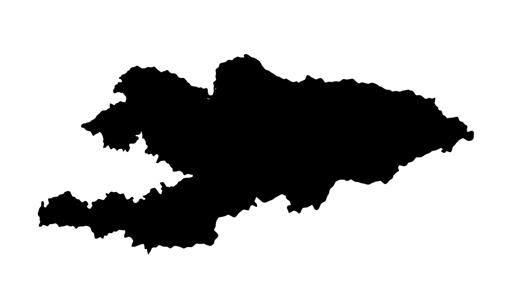
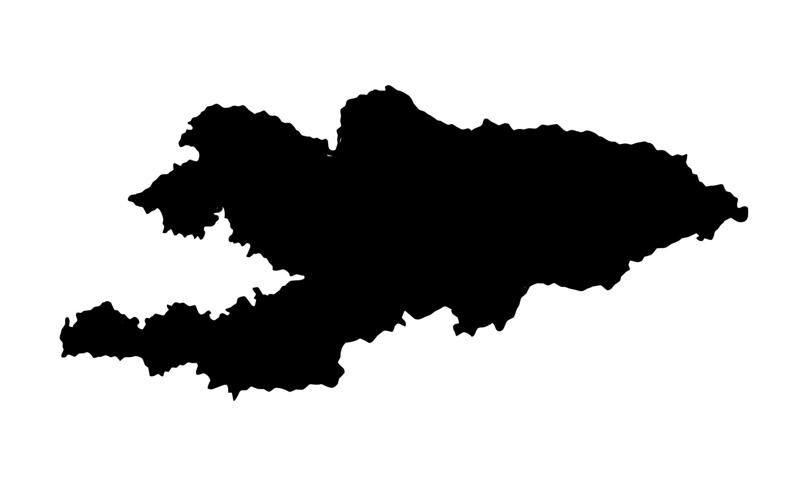

Originating in Central Asia, apples have been cultivated for thousands of years in Asia and Europe and were brought to North America by European colonists.

Tomatoes originated in Western South America and Central America. The Aztecs used them in their cooking by the time the Spanish arrived in the 16th century.

Wild strawberries are native to multiple regions across the Northern Hemisphere, with each region developing its own native species.


Cherries have been enjoyed since ancient times, originating in Europe and regions like Anatolia and the Caucasus.


Raspberries have a long history in Europe and Northern Asia, where they have grown wild and been cultivated for their fruit.

Pomegranates, symbolizing fertility and abundance, originated in regions from Iran to the Himalayas in Northern India.

Watermelon traces its origin to West Africa, where it has been cultivated since ancient times.

Red grapes, part of the vast grape family, trace their origins to the Near East, including regions like present-day Turkey, Armenia, Iran, and Georgia. They have been cultivated for thousands of years, prized for their use in winemaking, fresh consumption, and as dried fruits (raisins). The domestication and cultivation of red grapes played a significant role in ancient civilizations, particularly in the Mediterranean and Middle East, where they became deeply intertwined with cultural and economic activities.

Cranberries, native to North America and parts of Europe, have been valued for their tart flavor and medicinal properties, particularly by Native Americans.

Persimmons, native to China, have a long history of cultivation for their sweet, honey-like flavor, and have been a part of traditional Chinese medicine.

Dragon fruit, with its unique appearance, originated in Southern Mexico and Central America, cherished by indigenous peoples long before it spread globally.

Goji Berries, originating in China, have been used in traditional Chinese medicine and cuisine for thousands of years, praised for their nutritional benefits.

Chokeberries, native to Eastern North America, are known for their rich antioxidant content and have been used by Native Americans for centuries.


Red onions, with their distinct color and slightly sweet flavor, are part of the diverse onion family that originated in Central Asia, Iran, and West Pakistan. These onions have been cultivated for thousands of years, valued both for their culinary versatility and medicinal properties. Over time, they have spread globally and have become a staple in various cuisines, appreciated for the vibrant color and flavor they add to dishes.
Radishes were first cultivated in Southeast Asia before Roman times and were popular across the ancient world for their peppery flavor and ease of growth.

Beets have been consumed since ancient times in the Mediterranean region, initially for their greens, and later for their root.


Boysenberry, a cross between European raspberry, blackberry, American dewberry, and loganberry, was developed in the United States, known for its large size and deep flavor.

Red bell peppers, like all bell peppers, originated in Central and South America, where they have been cultivated for thousands of years. The red variety, which is simply a fully ripe form of the green bell pepper, is known for its sweet flavor and high vitamin content. Bell peppers were spread across the globe by Spanish and Portuguese explorers in the 16th and 17th centuries, quickly becoming integral to many cuisines worldwide.


Red potatoes, a variant within the diverse potato species originally from South America, specifically the Andean region, have been cultivated for their unique qualities like red skin and often waxy texture. These potatoes were developed from the rich variety of native Andean potatoes, which were a staple food for the Incan Empire and other indigenous cultures in the region. After the European colonization of the Americas, potatoes, including red varieties, spread globally and became a fundamental crop in many countries.


Turnips have been a staple food in Western Asia and Europe since prehistoric times, valued for their hardiness and nutritional content.

Dates, one of the oldest cultivated fruits, originated in the Middle East and North Africa, an essential food source in these regions for millennia.